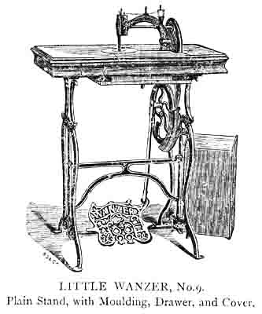

THE NEEDLEBAR
Manuals Section
Part Four
TUCKING GUIDE FOR LITTLE WANZER
Given with the Machine.
This attachment is useful in Marking Tucks, &c., where the plain iron guide cannot be used in consequence of the width of the work. Should the end of wire be either too large or too small to fit accurately, it can be adjusted to the proper size by either slightly opening or compressing the end of the wire which is split for this purpose. This attachment will also quilt.
The Wanzer A attachment is fastened by the thumb screw to side of head next the operator, and acts as above.
PATENT HEMMER
Given with the Machine.
The Patent Hemmer is useful for hemming Pocket-handkerchiefs, Muslins, &c.
To use the Patent Hemmer, slide the Hemmer on to the Presser foot, having raised the latter for that purpose; to make a narrow hem roll the edge of the cloth near one corner slightly with the left hand, hold it tightly with both hands, guide it into the curl of the Hemmer and there draw it backwards and forwards once, with the right hand, gently drawing the cloth into the mouth of the Hemmer, then turn the Presser foot by the tightly held cloth, when down the sewing may be commenced; care should be taken that the cloth always fills the furl of the Hemmer.
BRAIDING WIRE ATTACHMENT
Given with the Machine.
To braid, secure wire B to Machine as in drawing with Thumbscrew, given with Machine - place reel of braid (which should be proper size to fit easily in the hole in foot) on wire; the braid should then be passed through the small hole in Presser foot and under the Needle; then lower Presser foot and proceed to sew; the material can be turned in any direction at pleasure of operator, and braid will be securely stitched down.
THE SELF-SEWER
Given with the machine.
Secure the Self-Sewer to the plate so that it is close to the presser foot as in drawing. When adjusted to distance required, raise the presser foot; the fabric should then be placed between the two plates A and B and the presser foot lowered and sewing commenced.
The Self-Sewer is very useful for Sewing pleats; it holds the material firmly so that the seam is quite straight.
THE FRILLER
Fasten the Friller to the Cloth plate with the Thumb screw, as in above drawing, so that the plate of the Friller is upon the feeder close up to the hole through which the needle passes, then slide the intended frill between the friller and the cloth plate, bring the material on to which the frill is to be sewn between the two plates A and B, lengthen the stitches considerably and commence to sew, being careful to hold both materials towards the right, close against B.
As the feeder does not touch the upper material draw it onwards a little at first, till a few stitches have been made and the lower material draws the upper one with it.
To frill fuller hold the upper material slightly back and the lower will frill;; up quicker.

THE TUCKMARKER
Fasten the Tuckmarker and the Ruler to the cloth plate with the thumbscrew. The distance of the ruler from the needle to be regulated according to the width of the tuck required, while the distance between the needle and the spot marked by the spring B, indicates the distance of the next tuck.
Then place the spring B immediately under the screw at bottom of needle bar, as indicated in the drawing, and begin to sew; a tuck is then sewn, and the distance of the next tuck indicated by the striking of the spring B. In order to sew several tucks the preceding must always be turned under, so that all the tucks may be on the same side of the material.
The demand for this world-wide favorite machine is greatly increasing, which is
the best guarantee of its usefulness and adaptation to the wants of the public.
NEARLY 200,000 OF THESE MACHINES
- ARE -
NOW IN USE!
LITTLE WANZER, No. 0
BY HAND OR FOOT.
Instructions for using this Machine the same as for WANZER A, on page 20.
|

|
|